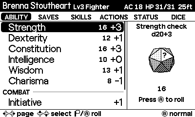
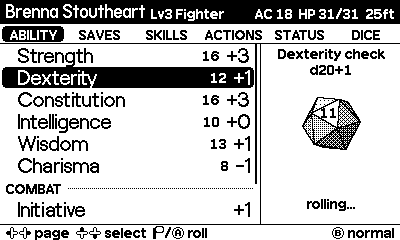
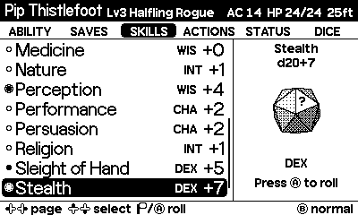
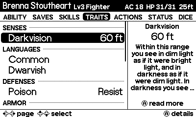
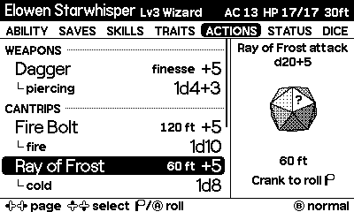
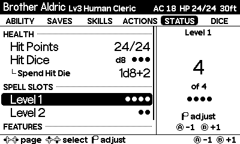
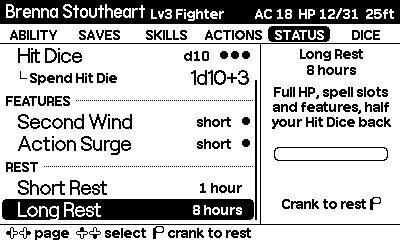
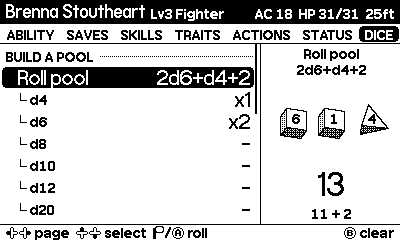
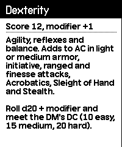

Crit Crank manual
Crit Crank is a D&D 5e character sheet for the Playdate. Every number on your sheet is a button: select it and turn the crank to roll real 3D dice. This page covers everything the game does.
Install
- Download crit-crank.pdx.zip.
- Sideload it at play.date/account/sideload. Or unzip it, put your Playdate in USB disk mode and copy
critcrank.pdxinto theGamesfolder. - To build it yourself, install the Playdate SDK and run
cd charsheet && make run.
Crit Crank shows up on your Playdate as Crit Crank. Your HP, slots, dice pool and selected row are saved automatically.
Upgrading from a build that shipped as charsheet.pdx? Delete it from Games after you install critcrank.pdx. Your saved data carries over.
The screen

- Header
- Your hero's name, level and class, then AC, current/max HP and speed.
- Tabs
- The seven pages. The current one is highlighted.
- List
- The rows on this page. The black bar is your selection. Rows with an
└belong to the row above, such as an attack's damage. - Dice tray
- The right-hand panel holds the dice the selected row will roll. The line at its foot says Crank to roll, then shows the total once they land.
- Footer
- A reminder of the controls for the selected row, and the roll mode (normal, advantage or disadvantage for d20 rolls; normal or critical for damage that can crit). Messages such as Used 1st-level slot (3 left) appear here too.
Controls
| Input | What it does |
|---|---|
| ⬅️ ➡️ | Change page: Ability, Saves, Skills, Actions, Status, Dice. |
| ⬆️ ⬇️ | Select a row. Hold to repeat. |
| Crank | Turn to pick up and shake the dice around the tray. The faster you crank, the harder they bounce and spin. Stop and they land. |
| Ⓐ | Open the full rule for the selected row. See Pause screen and Rules. |
| Ⓑ | On a d20 roll, cycle normal → advantage → disadvantage. On damage that can crit, toggle normal ↔ critical. |
| Crank, Ⓐ or Ⓑ on a counter | On a Status counter or a dice-pool row: crank clockwise to go up, Ⓐ for −1, Ⓑ for +1. |
| Crank on a rest | Take a short or long rest. See Crank to rest. |
| Menu | Pause. The left half explains the selected row. Choose Hero to switch characters or Read Rule for the full text. |
Rolling dice

Select any row with a bonus or damage and turn the crank. After a short wind-up the dice are thrown into the tray, where they bounce off its edges and each other and tumble for as long as you keep cranking. The Crank to roll line clears while they roll, giving them the whole panel. Stop, and they skid to a halt and land clear of that line, which then shows the total and how it adds up, for example 18 = 13 + 5, so the dice stay in view. A natural 20 or natural 1 turns that line black.
Only the crank rolls; Ⓐ opens the row's rule instead. When the crank is docked the tray says Undock the crank.
Advantage and disadvantage
Press Ⓑ before a d20 roll to cycle ADVANTAGE (roll two d20s, keep the higher) and DISADVANTAGE (keep the lower). The footer shows the mode, and a black bar across the top of the dice tray reads ADVANTAGE or DISADVANTAGE. Both dice are rolled; the one that doesn't count is drawn hollow. The mode goes back to normal after each d20 roll.
Critical hits
Roll a 20 on an attack and the next damage roll is marked CRIT x2: its damage dice are doubled. The crit stays ready until your next d20 roll, so you can roll several damage types. Press Ⓑ on a damage row that can crit (not save-for-half spells) to turn the crit on or off yourself, for example when the DM rules a hit is critical. Some heroes crit on a lower number, like Brenna the Champion on 19–20.
A natural 20 plays a DJ air horn and a natural 1 plays a sad trombone. Dice-pool rolls stay quiet.
The seven pages
- Ability
- The six ability checks with their scores, then Initiative, Proficiency Bonus and Passive Perception. Spellcasters also get Spell Save DC and Spell Attack.
- Saves
- Saving throws. ● marks proficiency.
- Skills
- All 18 skills. ● is proficient and ◉ is expertise (double proficiency).
- Traits
- Fly, swim, climb and burrow speeds, senses such as darkvision, languages, damage resistances, immunities and vulnerabilities, condition immunities, and armor, weapon and tool proficiencies. Ⓐ on a row opens its rule. Heroes imported before this page existed need a fresh import to fill it.
- Actions
- Weapons and spells in sections, each with an attack roll followed by its damage. Healing spells and features such as Second Wind are here too, and features that don't roll are listed with their details.
- Status
- HP, Hit Dice with a Spend Hit Die roll, Heroic Inspiration and Exhaustion, spell slots and limited-use features, plus the Short Rest and Long Rest rows. At 0 HP a Dying section appears at the top.
- Dice
- Build a custom pool, or use the quick rolls: d4 to d100, 2d6, 4d6 drop lowest and 8d6.



HP, slots and uses

Select a counter on the Status page and turn the crank to change it: clockwise to go up, counter-clockwise to go down. Ⓐ takes one off and Ⓑ adds one. Hold either button to keep counting. Use it to take damage, heal or mark a spell slot used.
Most of the time you won't need to. Rolling a spell spends a slot of its level, and rolling a limited feature spends a use. An attack and its damage count as one cast, so the slot is spent once. If you have none left, the footer warns you but the roll still happens.
Heroic Inspiration (0 or 1) and Exhaustion (0 to 6) start at 0 and work the same way. Exhaustion is only tracked: its penalties aren't applied to rolls, so check the row's rule for the 2014 and 2024 effects. A long rest removes one level.
Second Wind and Spend Hit Die heal you when the dice land. Spend Hit Die needs a Hit Die left and some missing HP.
Crank to rest

Resting is the one thing you can't do by accident. Go to the Status page, select Short Rest or Long Rest and keep turning the crank:
- A bar fills in the tray as you crank. It clicks every quarter turn, rising in pitch.
- Two full turns (720°) complete the rest. A chime plays, the tray shows RESTED, and the footer says what came back.
- If you stop early, the bar drains away and nothing happens.
- After a rest the crank is locked until you let go of it for half a second, so you can't take two rests in a row by accident.
Pressing Ⓐ on a rest opens its rule, and Ⓑ shows a reminder to crank. If the crank is docked, the tray asks you to undock it.
| Rest | What comes back |
|---|---|
| Short Rest (1 hour) | Features that recharge on a short rest, such as Second Wind, Action Surge and Channel Divinity. Then spend Hit Dice on the Status page to heal. |
| Long Rest (8 hours) | All HP, every spell slot and feature, and half your total Hit Dice (at least 1). It also removes one level of Exhaustion. Death saves and a pending crit are cleared. |
Dying and death saves
At 0 HP the Status page opens with a Dying section: a Death Save roll and counters for successes and failures. Roll it and the game counts the result for you:
- 10 or higher is a success; lower is a failure.
- A natural 1 counts as two failures.
- A natural 20 brings you back with 1 HP.
- Three successes and you're stable. Three failures, and the footer tells you the bad news.
Any healing, or a long rest, clears the death saves and hides the Dying section.
Dice pools

On the Dice page, Build a pool lists a row for each die from d4 to d20 and a Modifier. Select one and crank, or press Ⓐ/Ⓑ, to change how many. The tray previews the whole pool.
Then select Roll pool and crank to roll it all at once, for example 2d6+1d4+2. A pool holds up to 12 dice and a modifier of ±20. Press Ⓑ on Roll pool to clear it. Each hero keeps their own pool.
Pause screen and Rules

Press Menu and the left half of the pause screen explains the selected row: what the ability, save, skill, spell, feature or resource does, and how its bonus adds up, for example +5 = STR +3, prof +2.
For longer text, press Ⓐ on the row (or choose Read Rule in the menu). A full-screen viewer slides up with the whole description. Crank or use ⬆️⬇️ to scroll, Ⓐ to page down (and close at the end), and Ⓑ to close.
Heroes
Crit Crank comes with four level-3 heroes: Brenna Stoutheart (fighter), Elowen Starwhisper (wizard), Pip Thistlefoot (halfling rogue) and Brother Aldric (cleric). Switch with Menu → Hero.
Each hero remembers their page, selected row, d20 mode, pending crit, last spell cast and dice pool, along with their HP and resources.
Import from D&D Beyond
charsync is a command-line tool for macOS, Windows and Linux. Download the matching binary from the latest release. It downloads a public D&D Beyond character, converts it and sends it to your Playdate over USB while Crit Crank is running. Run ./charsync-macos on macOS, ./charsync-linux on Linux, or .\charsync-windows.exe in Windows PowerShell. On macOS and Linux, make it executable first; on macOS also clear the download quarantine, since the binary isn't notarized:
chmod +x charsync-macos
xattr -d com.apple.quarantine charsync-macos
./charsync-macos import https://www.dndbeyond.com/characters/12345678It converts ability scores, saves, skills, HP, AC, spell slots, weapons, damage and healing spells, limited-use features, and traits: speeds, senses, languages, defenses and proficiencies. Spell and feature descriptions show up on the pause screen and in the Rules viewer. The new hero is selected straight away. Importing the same character again updates it and keeps its current HP, slots and uses.
The charsync README covers the Simulator, USB disk mode and removing a hero.
Rules reference
- Ability checks, saving throws, skills, initiative and death saves are d20 + bonus.
- Attacks roll to hit, then roll damage separately.
- Advantage and disadvantage reset after each d20 roll.
- A critical hit doubles the damage dice of the following damage rolls until the next d20 roll.
- Halfling Lucky (Pip) automatically rerolls natural 1s on d20 rolls.
- Spells spend a slot of their level; limited features spend a use. Multi-roll actions spend once per cast.
Rule summaries are paraphrased from the 5e System Reference Document.
The browser demo
The demo on the home page is the game's code ported to JavaScript, so it behaves like the Playdate. On a computer:
| Playdate | Mouse or keyboard |
|---|---|
| Crank | Drag the crank handle in a circle, scroll over the screen, or hold [ / ] |
| D-pad | Arrow keys or WASD |
| Ⓐ | X or Enter |
| Ⓑ | Z or Backspace |
| Menu | Esc or M |
The demo saves to your browser's local storage. It uses system fonts because the Playdate's fonts are licensed for Playdate games only.